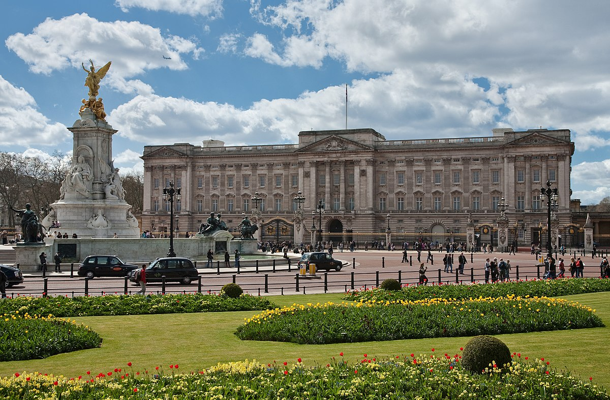
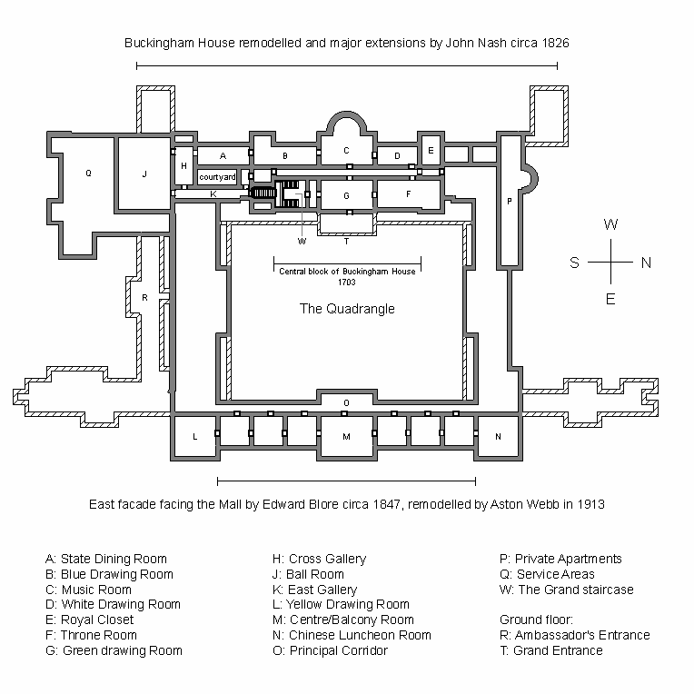

|
| Спочатку Букінгемський палац був відомий як Букінгем-хаус і будувався для герцога Букінгемського (з 1703 року). |
 |
План Букінгемського палацу:

|
Букінгемський палац-офіційна лондонська резиденція королеви Великобританії Єлизавети II. Розташований навпроти вулиці Мелл і Грін-парку з біломармуровим і позолоченим пам'ятником королеві Вікторії. Коли монарх знаходиться в палаці, над дахом палацу майорить королівський штандарт.
|
| Палац був офіційно оголошений головною резиденцією британських монархів при вступі на престол королеви Вікторії в 1837 році. |
|